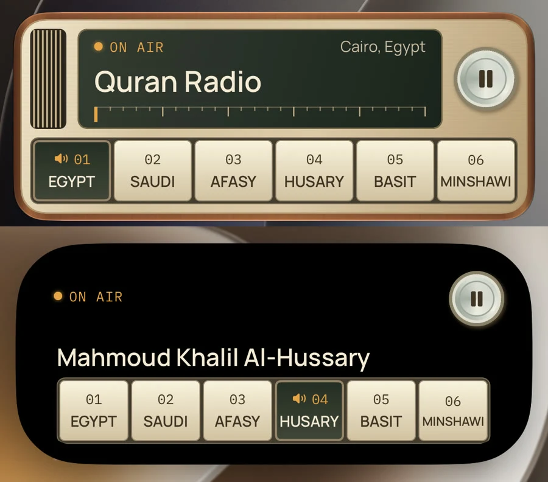

Release notes · Hona Elqahra for iPhone
Hona Elqahra 1.2: Quran Radio Live Activity & Dynamic Island
Keep your walnut radio dial on the iPhone Lock Screen, StandBy, and Dynamic Island while listening, switch across six presets without unlocking or opening the app, and stream 178 stations with automatic failover.

Hona Elqahra (هنا القاهرة) is a free, ad-free Quran radio app for iPhone with 178 live Quran, tafsir, adhkar, and translation stations built around a warm walnut receiver and one tuning knob. Version 1.2 adds interactive Live Activities to the Lock Screen, StandBy, and Dynamic Island, alongside stream failover and stalled-stream recovery.
How do Hona Elqahra Live Activities work on the Lock Screen and Dynamic Island?
Hona Elqahra starts a local-only Live Activity automatically the moment audio begins playing, and ends it cleanly as soon as you pause or stop playback. There are no remote push notifications and no background battery drain when the radio is off.
- Live status readout: An amber phase dot and readout show ON AIR, TUNING, or BUFFERING right inside the dark emerald dial window.
- Lock Screen and StandBy controls: The full receiver banner shows the speaker ribs, tuning scale needle, round play/pause key, and all six preset buttons (01 to 06) synced with your in-app dial.
- Dynamic Island (compact and expanded): Compact mode shows the amber radio glyph on the leading side and your active preset number (for example 04) on the trailing side. Long-press to expand and switch presets or pause immediately.
Home Screen widgets, Siri, and Shortcuts recap
Live Activities pair directly with the Home Screen widgets, Siri voice phrases, and Shortcuts actions shipped in Hona Elqahra 1.1. Pin a station to the small widget or keep all six presets on the wide widget to launch listening from your Home Screen, then let the Live Activity take over once audio starts.

More reliable live Quran streaming in 1.2
Broadcast streams sometimes stall or drop on mobile networks. Version 1.2 adds automatic failover across primary and backup endpoints (including Qurango primary/backup hosts and Radiojar nodes for Cairo and Saudi Quran Radio) and excludes stalled buffering windows when measuring healthy playback recovery.
Questions
How do Hona Elqahra Live Activities work? When playback begins, Hona Elqahra 1.2 starts a local Live Activity on your Lock Screen, StandBy display, and Dynamic Island showing ON AIR, TUNING, or BUFFERING status, a play/pause button, and all six preset keys (01 to 06). Pausing or stopping clears it automatically.
Can I switch radio stations from the Dynamic Island? Yes. Expanding the Dynamic Island reveals the station name, round play/pause button, and all six preset keys.
Does Hona Elqahra still include Home Screen widgets? Yes. Both the small pinned-station widget and wide 6-preset widget from 1.1 work with Live Activities.
Is Hona Elqahra free with zero ads? Yes. It is 100% free on the App Store for iPhone (iOS 18 or later) with zero ads and no account.
Does Hona Elqahra work on Apple TV? Hona Elqahra is for iPhone only. For Apple TV, Sajdah by the same developer includes Quran radio and live Makkah TV alongside 200+ reciters and prayer times.
ما الجديد في هنا القاهرة 1.2
يضيف تحديث 1.2 من تطبيق هنا القاهرة للآيفون الأنشطة المباشرة (Live Activities) على شاشة القفل وStandBy وDynamic Island أثناء الاستماع إلى الـ178 محطة في دليل المحطات.
- النشاط المباشر على شاشة القفل وStandBy: يعرض اسم المحطة وحالة البث مع زر التشغيل والإيقاف الدائري وأزرار المحطات الست (01 إلى 06) للتبديل دون فتح التطبيق.
- Dynamic Island المدمجة والموسعة: تعرض رقم المحطة النشطة أثناء الاستماع، وعند التوسيع تتيح الإيقاف أو الانتقال بين المواضع الستة مباشرة.
- تحسين استقرار البث: تبديل تلقائي بين المسار الرئيسي والاحتياطي عند تعثر الخادم.